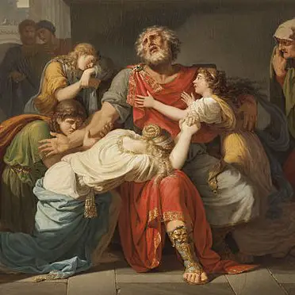
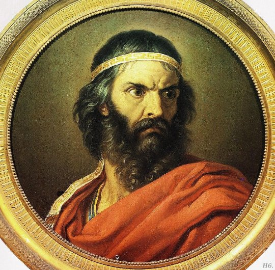
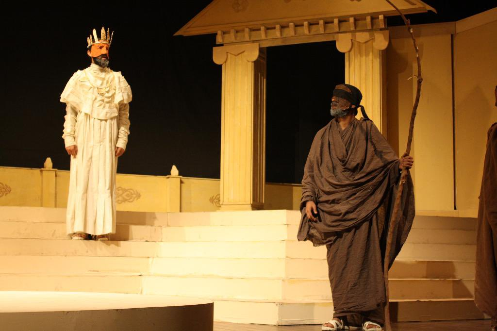

| A Royally Tragic 24 Hours
Last night, in the royal palace a series of tragic events unfolded in a single day. This ended up with our cunning King Oedipus blinded and abandoning his kingdom, beloved Queen Jocasta dead, and ambiguity in the air, leaving his children orphaned. |
 | |
| The True Past of The King of Thebes
Oedipus Rex the now-former king of Thebes has had his tragic past unfolded before his eyes. By the words of the prophetic Tiresias “ A deadly footed, double striking curse, from father and mother both, shall drive you forth from this land, with darkness on your eyes”. |
 |
|
| Obituary of Jocasta
The people of Thebes are sad to announce the death of a very important member of the royal family: Jocasta. She was many things, The Queen of Thebes, the spouse and mother of King Oedipus, and the widow of King Laius. All of the queen’s troubles began when she married the cursed Prince Laius. |
 |
|
| Interview with Creon
The Theban Times get an exclusive interview with Creon, who is the brother of Jocasta and Oedipus's advisor as well. Get exclusive details like who he is, what is his past, present future. |
 | |
| The Ironic Life of The King of Thebes
The life of Oedipus was a very intricate, and ironic one. Much so that it could be told in the form of a story. Many of the major events in Oedipus’ life are examples of dramatic irony as the audience knows of Oedipus’ origins while Oedipus is still oblivious to his true identity. |
 | |
| Did Oedpius Make the Correct Choice?
How can we say that Oedipus made the right decision? Making decisions is an important part of everyones’ lives and Oedipus had to make some difficult ones as well. Crossroads and choices are shown significantly throughout this journey. |
.png) |